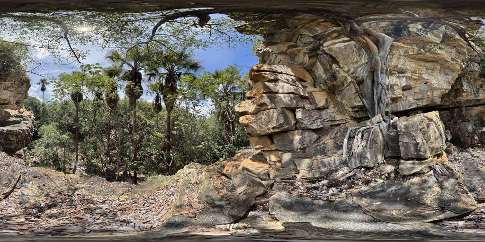
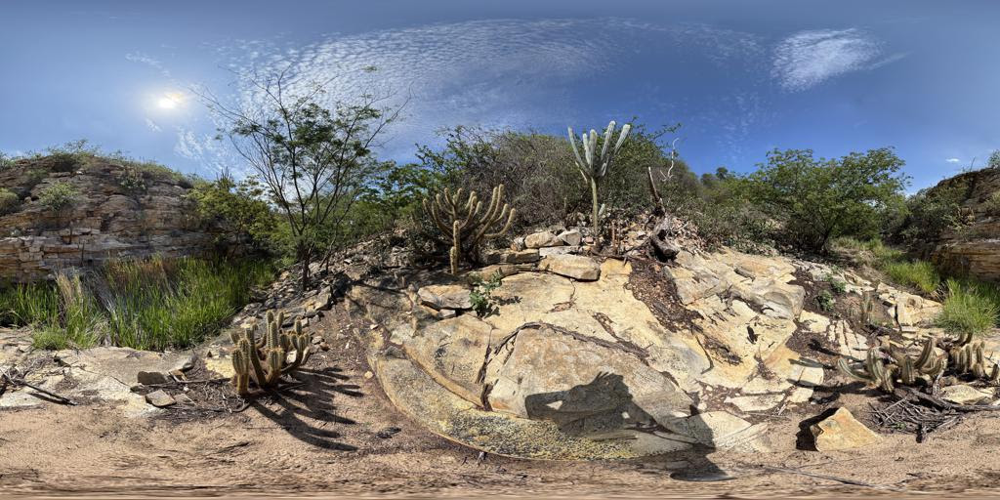
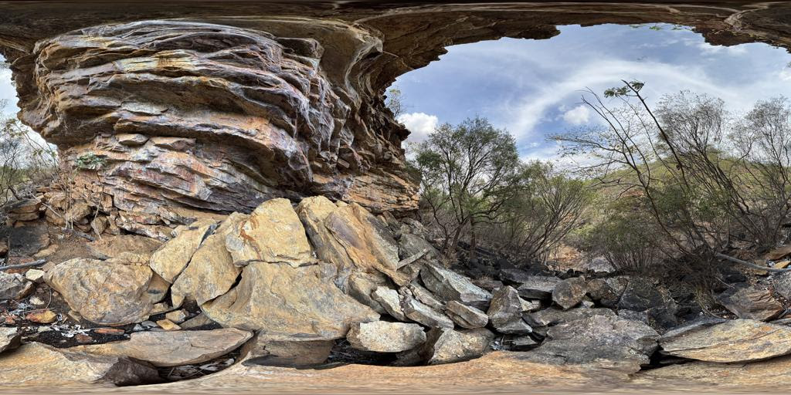

Riacho Arrozinho
Visualização 360° do cenário Riacho Arrozinho na Caatinga.
Abrir 360°

Zé Pezão
Explore a paisagem da trilha Zé Pezão em modo imersivo.
Abrir 360°

Poço do Urubu
Acesse a experiência 360° do Poço do Urubu na Caatinga.
Abrir 360°